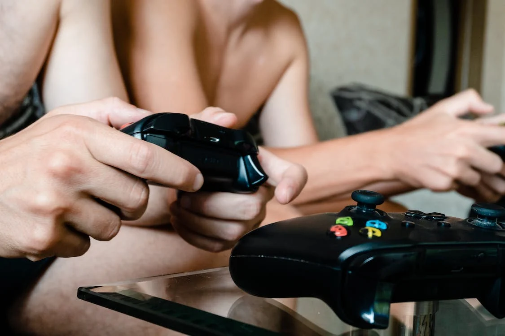

Wellcome to Reviews Section
Reviews Section's Introduction
Hi, I hope you enjoy my reviews section, where I am going to be giving my opinion and rating all kind of videogames of all ages based on all my experience playing videogames of many kind of platforms, in different consoles (including PC), and videogames oriented or targeted to all people, including children, teenagers, young people, and even for adult people, also I am going to including old and new ones videogames, so if you are looking for a specific and honest review for a specific game before you buy it, or you are just looking to find and discover something new and good, you are in the right place, just take a look to my reviews.
Dota 2
A modern multiplayer that I consider a masterpiece. This game like most of the MOBAs is kind of difficult when you begin playing them, but once you start to learn its secrets, items, mechanics and the things the makes this game so special you will just get hours of entertainment with it, and even more if you play it with your friends and all of you together creates a full team and starts playing against other full teams. In Dota 2 there's a wild and exciting variety of play here that's unmatched, even by its peers like the famous League of Legends. Also, Dota 2 possibly has something beautiful for most players that it avoids totally the term "pay to win" because you will have total access to all its playable content since you start, and it does not matter if your account is level 1, and you have invested $0 in the micro-pays in the game, you have the same opportunity to win as the persona that has a higher account level and have paid for customs or skins for his characters, because these customs or skins are just visual to make the characters look different from their original aspect, but affects nothing on the game mechanics. In summary, this is a game that I really enjoy and I highly recommend to play.